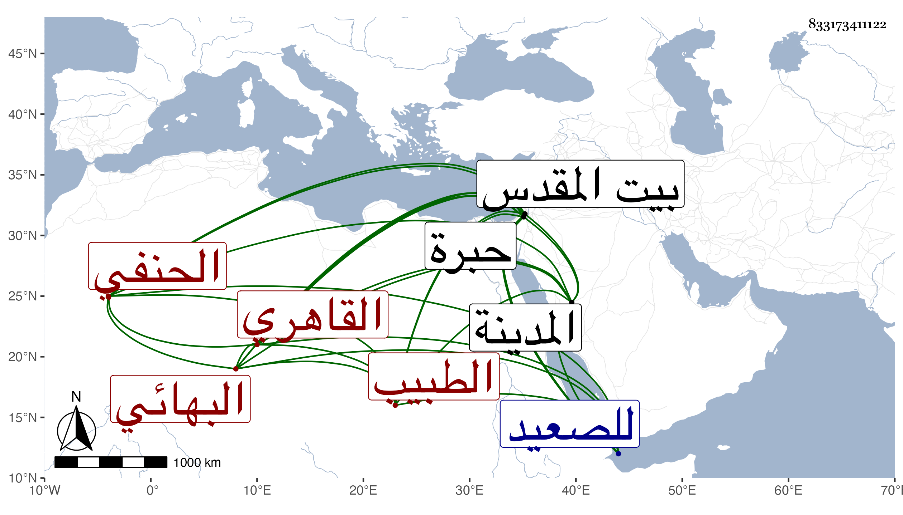

0902Sakhawi.DawLamic.ITO20230111-ara1.EIS1600.833173411122
Biography ID: 833173411122
237
أبو بكر بن محمد بن محمد بن علي بن محمد الزين القاهري البهائي نسبة لحارة بهاء الدين الحنفي الطبيب والد الكمال محمد ويعرف بابن الشريف بالتصغير لكون بعض الشرفاء أعلم جده بقرابة بينهما . ولد كما قاله لي في سابع عشر صفر سنة ثماني عشرة وثمانمائة وكان كل من أبيه وجده كحالا فنشأ هو طبيبا بإشارة أمه وقرأ القرآن وتدرب بابن البندقي وفتح الدين بن فيروز وتزوج بابنته واستولدها ابنه المشار إليه وبغيرهما من الأطباء كالبدر بن بطيخ وعمر بن صغير وجل انتفاعه به بل قال إنه قرأ على الكافياجي في علم الطب وأنه صحب الشيخ محمد الحنفي وابن الهمام وسيف الدين وغيرهم من العلماء والسادات كمحمد الفوى وعمر النبتيتي وعظمه جدا وتنزل في الجهات كالصرغتمشية والطب بالشيخونية وغيرها وعالج المرضى وحمده كثير من الفقراء في ذلك وحج مرارا أولها في سنة سبع وأربعين وجاور في بعضها بل أقام بالمدينة أياما وكذا زار بيت المقدس والخليل وسافر مع تمر باي طبيبا حين تجرد للصعيد ولم يرتض له أبوه بذلك ولكنه استفاد زيارة الفرغل وغيره أبرع منه .
